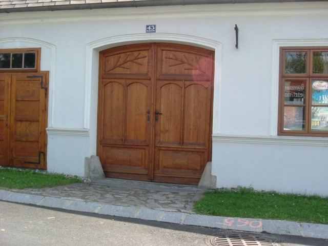

Zakázkové truhlářství · Pelhřimov
Nábytek, okna a dveře přesně na míru.
Kuchyně, vestavné skříně, schody i zábradlí. Vyrábíme podle konkrétních přání zákazníků, z masivu i z lamina, pro interiéry i exteriéry.
Vlásenická 1540, 393 01 Pelhřimov

Co vyrábíme
Kompletní truhlářská výroba
Zakázková výroba, která vychází z konkrétních přání zákazníků. Vyberte, co Vás zajímá, a ukážeme Vám, co už jsme vyrobili.
Realizace
Ukázky naší práce
Výběr z fotografií hotových zakázek. Fotku otevřete klepnutím.
Restaurování nábytku
Starému nábytku vrátíme život
Kromě nové výroby se věnujeme i renovaci a restaurování starého nábytku. Podívejte se do dílny.
O nás
Za dobu našeho působení jsme si získali mnoho spokojených zákazníků, kteří se k nám znovu a znovu vracejí.
Vítáme Vás na stránkách našeho truhlářství. Zabýváme se především zakázkovou výrobou, která vychází z konkrétních přání našich zákazníků.
Provádíme kompletní truhlářskou výrobu pro interiéry i exteriéry, a to jak z masivu, tak z lepených materiálů. Těšíme se i na spolupráci s Vámi.
Kontakt
Zakázkové truhlářství Jiří Havel
- Telefon
- 603 377 801
- Adresa
- Vlásenická 1540
393 01 Pelhřimov - IČO
- 690 98 981